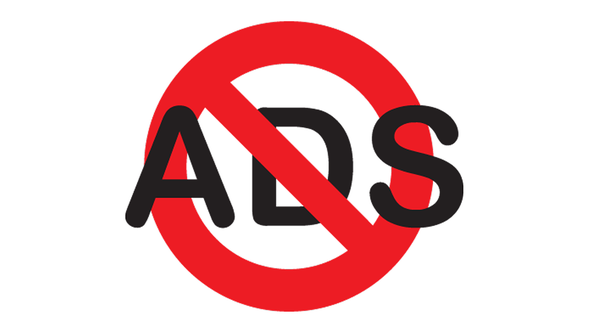

Projects I'm Working On

The Unit
The Key to Task-Management
Housing Hound
Housing Made Simple

My Portfolio V2
Introducing You to Me

Youtube Downloader
Get Videos & Music for Offline Use

Ad Blocker
Get Rid of Pesky Ads

Gitlet
Git's Little Brother
Sudoku Solver
Backtracking, AI, & GUI

COVID Voice Assistant
Ask and You Shall Receive... Information
Sorting Algorithm Visualizer
Watch Some Sorting Action!